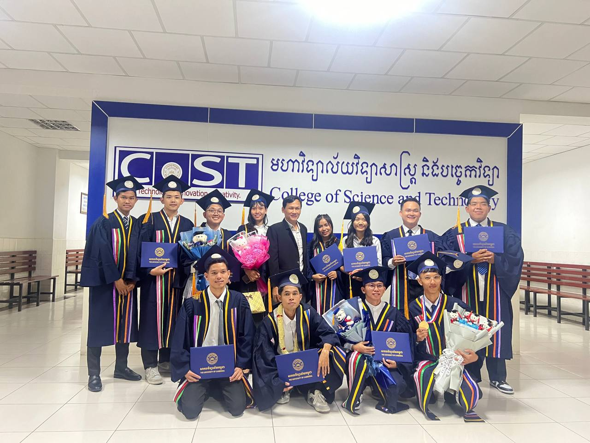
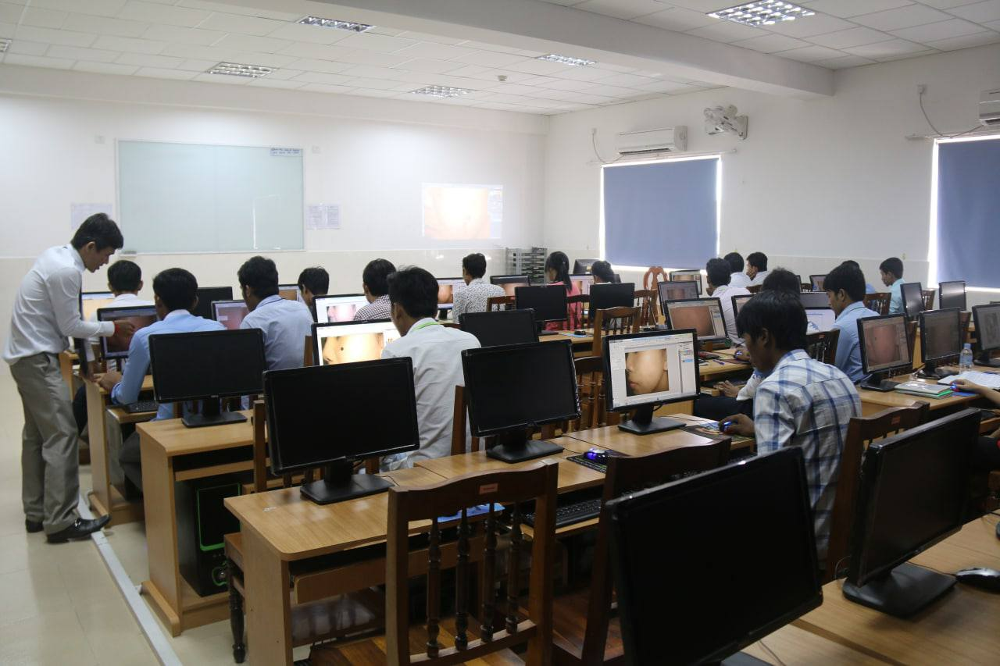
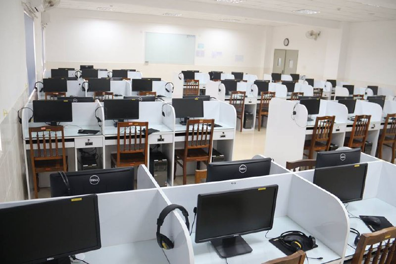
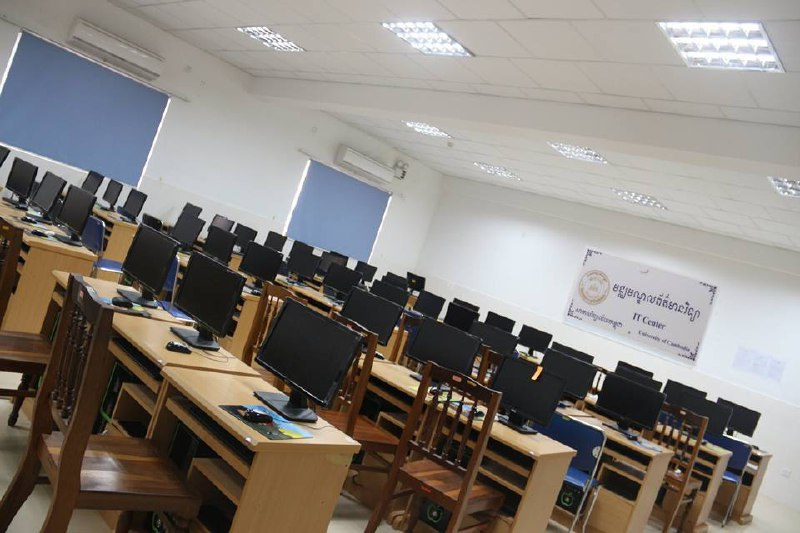
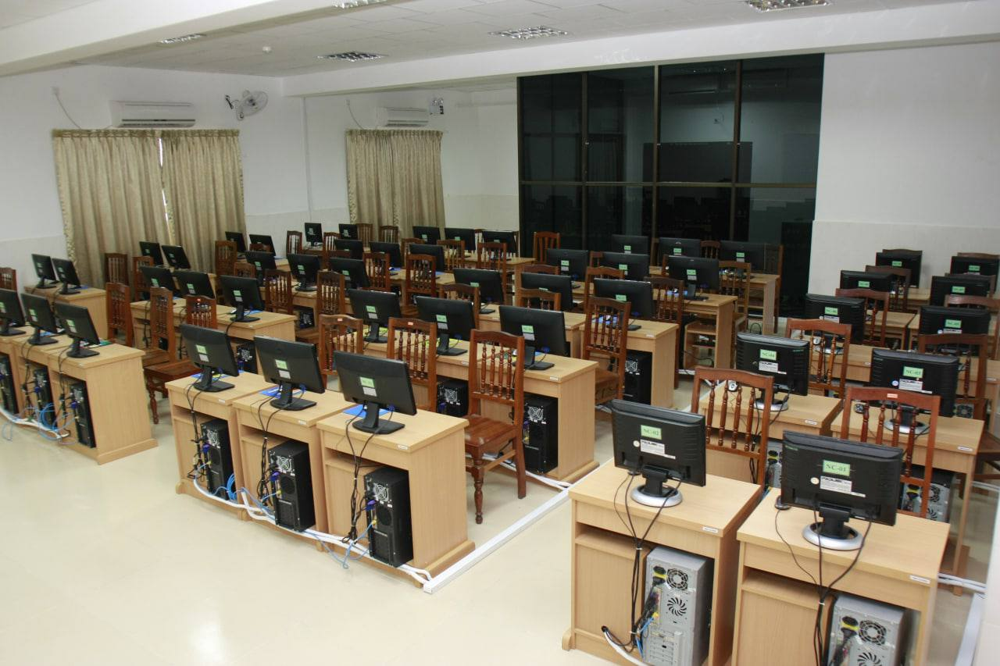

Welcome to College of Science and Technology of The University of Cambodia. For everyone who wishes to pursue for any AA and BA degrees of the study programs, please register now or visit the campus of The University of Cambodia. College of Science and Technology at The University of Cambodia. The College of Science and Technology (CoST) was established at the same time as the The University of Cambodia in 2013. The College have been developed and transforms with the rise of Science and technology in the 21st century. We drive and inspire our students to value creativity and innovation in the information technology world. The college offers undergraduate and graduate programs such as Computer Science, Information Technology and Electronics and Telecommunication. Our programs prepare students for careers in these disciplines as scientific and ICT professional. In order to meet increasing demand for graduates in computer science and information technology, we have: developed robust and modern curricula; established sophisticated facilities; and hired high qual...
Majors Offering in College of Science and Technology
Majors Offering college of science and technology
| Majors |
Associate bachelor |
Master, PhD |
| Computer science(Offering) |
AA and BA |
MS and PhD |
| information technology |
BA |
MS |
| Electronics and Telecommunication |
BA |
MS |
College of Science and Teachnology Computer Labs



Computer Labs University of Cambodia
| Multimeia Labs |
E-learning Labs |
IT-Center Labs |
| Graphic Design |
Graphic Design |
Network Design |
| ComputerApplication |
Produce video content |
web development |
| Mobile Applications |
Computer Applications |
Network security |